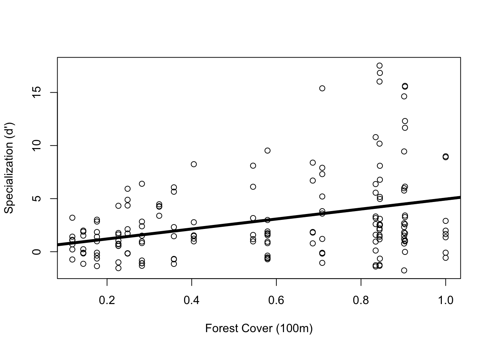
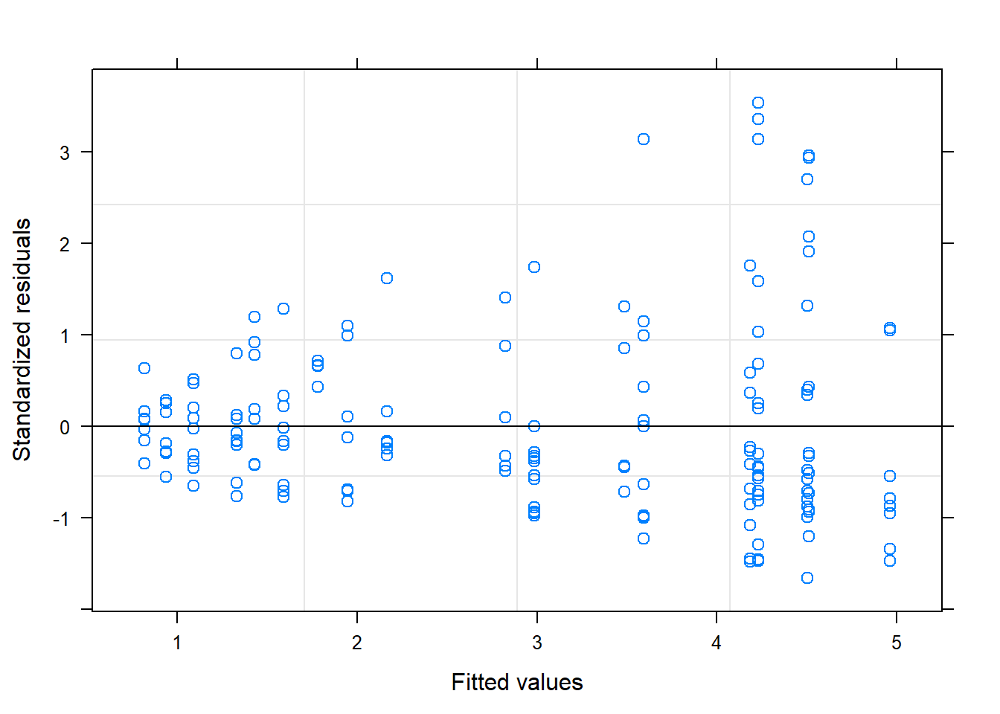
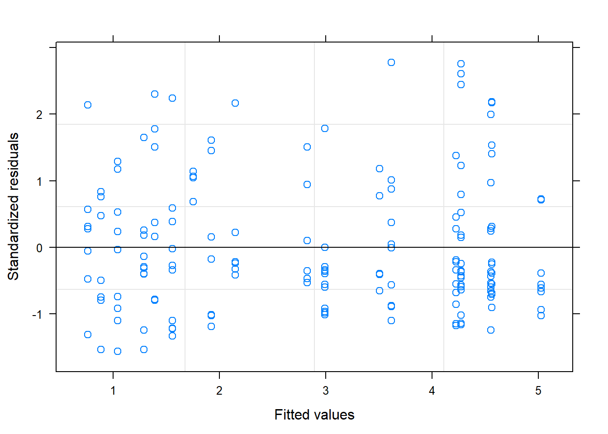
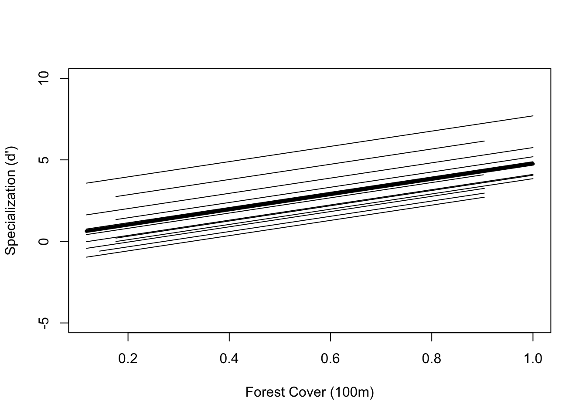
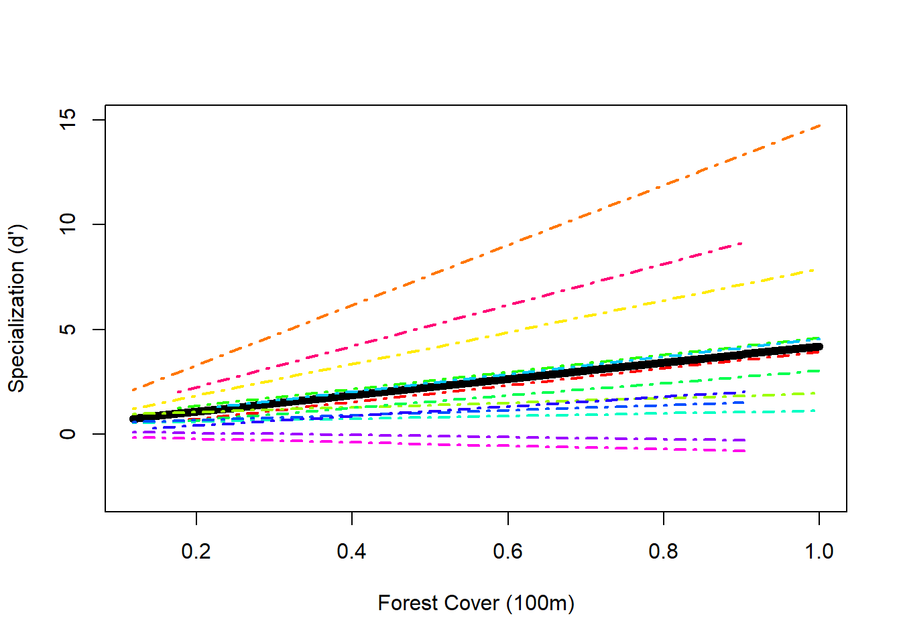
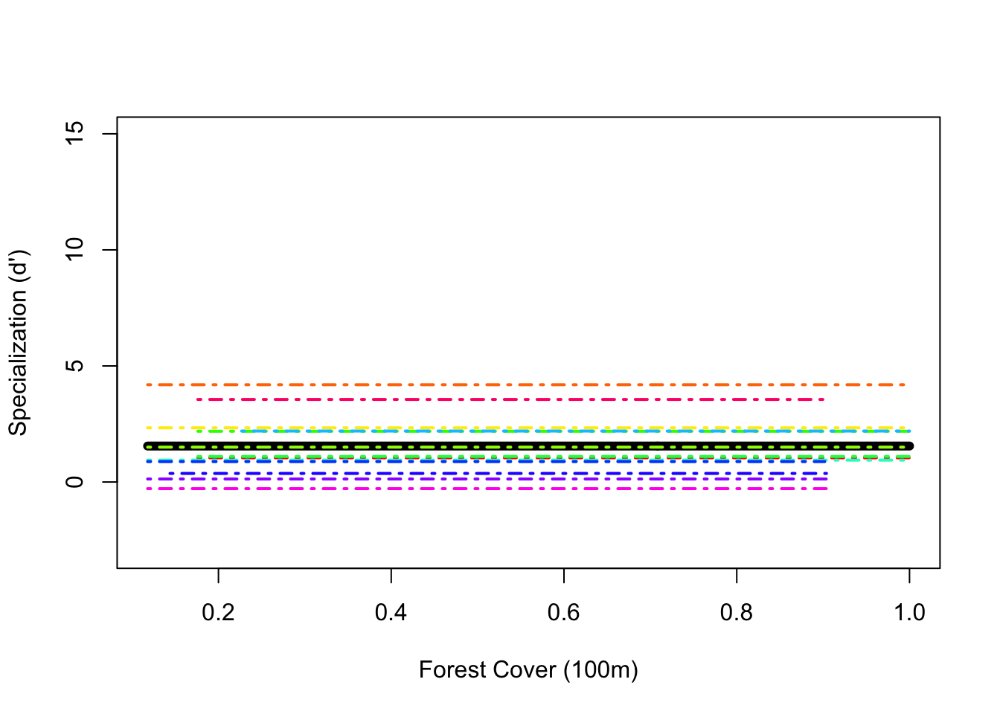

Mixed-effects models with nested data
Tad & Beth
Assigned Reading:
Chapter 5 from: Zuur, A. F., Ieno, E. N., Walker, N., Saveliev, A. A. and Smith, G. M. 2009. Mixed Effects Models and Extensions in Ecology with R. Springer. link
Key Points
Fixed vs. random effects
Fixed and random effects affect mean and variance of y, respectively.
Examples
Fixed: Nutrient added or not, male or female, upland or lowland, wet versus dry, light versus shade, one age versus another Random: genotype, block within a field, individuals with repeated measures, family, parentMixed-effects models maximize use of info in the data, compared to 2-stage analysis.
Linear mixed-effects models
Random intercept model
Random intercept and slope model
Random effects model

Model selection and validation
Step 1: fit linear regression
Step 2: fit model with gls (so linear regression model can be compared with mixed-effects models)
Step 3: choose variance strcuture
- Introduce random effects, and/or
Adjust variance structure to take care of heterogeneity
Step 4: fit the model
Make sure
method="REML"M1.lme=lme(Form, random=~1|Nest, method="REML", data=Owls)Step 5: compare new mixed-effects model with old
Form <- formula(LogNeg~SexParent*FoodTreatment+SexParent*ArrivalTime)M.gls = gls(Form, data=Owls)M1.lme=lme(Form, random=~1|Nest, method="REML", data=Owls)anova(M.gls, M1.lme)Stept 6: validate model and, if necessary, repeat steps 4 and 5 until good model is found
Steps 7 and 8: find optimal fixed effects structure
First, interaction terms; drop one at time and compare models
Use
methods="ML"Step 9: refit with REML and validate model
Step 10: interpret
Step 11: additive model
Additional reading
Chapter 19. Mixed-Effercts Models, in Crawley 2012 The R Book, 2nd ed. link
Fixed vs. random effects
Pseudoreplication
More examples of mixed-effects models for different sampling and experimental designs
Analysis Example
The data:
- 19 plant-hummingbird networks - hummingbirds using plants as nectar resources
- 19 sites with increasing proportion of forest cover in 100m radius around sampling site (forest is replaced with coffee agriculture in the study region)
- 13 hummingbird species
- Plant-hummingbird networks used to calculate hummingbird species’ specialization
Hummingbird species specialization measured using z-score standardized d’ values
- One d’ value for each species at each site
- The greater the d’ value, the more specialized the species
Question: Is there a relationship between hummingbird species specialization and forest cover?
Load the data
This is a dataset of 3 columns:
- data[ ,1] = proportion of forest cover at 100m radius around sampling site where hummingbird species was caught
- data[ ,2] = each hummingbird species as a factor at each site it was caught
- data[ ,3] = the specialization (d’) value for each species at each site
# Beth's data are not availale on our class GitHub repository.
# To use this script, download the data from our class Canvas site and place it in the data folder of your working directory.
# Use this line if you downloaded the data file to the data directory on your computer
spec <- read.csv(file = "data/Specialization_Data_BIO202.csv", header = TRUE)
head(spec)## Polygon.Area.100 fSpecies Specialization
## 1 1 Charming.Hummingbird -0.574054
## 2 1 Green.Hermit 8.986848
## 3 1 Rufous.tailed.Hummingbird 1.360791
## 4 1 Snowy.bellied.Hummingbird 1.980888
## 5 1 Stripe.throated.Hermit 2.902282
## 6 1 Violet.crowned.Woodnymph 1.662080Originally when I did this analysis I followed Zuur et al.’s “10-step process” in the book starting on pg. 130. I do not outline all the steps I took here, but I found it useful in case any of you are interested for future reference.
All analayses are done using the package {nlme} but can also be done in {lme4}
library(nlme)Since I want to know if hummingbird specialization changes with increasing forest cover, I can start with a simple linear regression
Side note: instead of using the lm() function for my linear model, I use the gls() function in case I need to add a variance later on, this way I can compare the model with no variance structure to the model with the variance structure.
Form <- Specialization ~ Polygon.Area.100
M.lm <- gls(Form, data = spec)
plot(Form, data = spec, xlab = "Forest Cover (100m)", ylab = "Specialization (d')")
abline(M.lm, lwd = 4)
plot(M.lm)
The cone shape in my residuals illustrates that my data are violating the assumption of homogeneity, so I will apply a variance structure to hopefully take care of this.
The best variance structure I found was the varPower structure
vf3 <- varPower(form = ~Polygon.Area.100) ## power of the covariate variance structure = the variance of the residuals multiplied with the power of the absolute value of the variance covariate forest cover
## nested within linear model so can be compared to linear model fit using log likelihood ratio
## Variance covariate can not have values equal to zero
M.gls3 <- gls(Specialization ~ Polygon.Area.100, weights = vf3, data = spec)
AIC(M.lm, M.gls3) ## we used the gls function earlier instead of the lm function so we can do this anova## df AIC
## M.lm 3 908.2300
## M.gls3 4 851.0649plot(M.gls3) ## you can see the residuals are now less cone-y
summary(M.gls3)## Generalized least squares fit by REML
## Model: Specialization ~ Polygon.Area.100
## Data: spec
## AIC BIC logLik
## 851.0649 863.4399 -421.5325
##
## Variance function:
## Structure: Power of variance covariate
## Formula: ~Polygon.Area.100
## Parameter estimates:
## power
## 0.7317331
##
## Coefficients:
## Value Std.Error t-value p-value
## (Intercept) 0.193740 0.3090522 0.626885 0.5316
## Polygon.Area.100 4.830138 0.8255718 5.850657 0.0000
##
## Correlation:
## (Intr)
## Polygon.Area.100 -0.791
##
## Standardized residuals:
## Min Q1 Med Q3 Max
## -1.5689357 -0.6917083 -0.3274916 0.5277962 2.7803202
##
## Residual standard error: 5.450152
## Degrees of freedom: 165 total; 163 residualFrom the model with the variance structure we can tell that it looks like there is a relationship between hummingbird species specialization and amount of forest cover, so that’s neat.
Biologically, however, it’s totally possible that each of the 13 hummingbird species has its own relationship between specialization and forest cover. For example, a morphologically specialized hummingbird species that has a really long, curved beak may not be able to display the same degree of change in its specialization as a hummingbird with a medium-length, straight beak.
In addition, as with the example of the RIKZ data from 5 beaches in the Zuur book Chp. 5, the specialization values of each hummingbird species across the sites are likely to be more related to each other than to the specialization values of other hummingbird species. This makes the data nested.
Thus, a mixed effects model for nested data is applicable in this case!
Random Intercept Model
We can model specialization as a linear function of forest cover where the intercept is allowed to change per hummingbird species. This biologically makes sense because it is expected that each hummingbird species will have its own unique specialization behavior at each site.
Allowing the intercept to vary for each species is a random intercept model
Mlme1 <- lme(Form, random = ~1|fSpecies, data = spec, weights = vf3)
## lme stands for linear mixed effects. In this function you must specify a "random" argument
## ~1|fSpecies specifies the random intercept model. Remember | in this case means "by" so you are allowing the intercept to vary by species.
summary(Mlme1)## Linear mixed-effects model fit by REML
## Data: spec
## AIC BIC logLik
## 807.9522 823.4209 -398.9761
##
## Random effects:
## Formula: ~1 | fSpecies
## (Intercept) Residual
## StdDev: 1.425693 4.349495
##
## Variance function:
## Structure: Power of variance covariate
## Formula: ~Polygon.Area.100
## Parameter estimates:
## power
## 0.7097861
## Fixed effects: list(Form)
## Value Std.Error DF t-value p-value
## (Intercept) 0.077894 0.4869339 151 0.159969 0.8731
## Polygon.Area.100 4.678450 0.6992141 151 6.691012 0.0000
## Correlation:
## (Intr)
## Polygon.Area.100 -0.467
##
## Standardized Within-Group Residuals:
## Min Q1 Med Q3 Max
## -3.1087088 -0.6534845 -0.2104922 0.6095179 3.2441853
##
## Number of Observations: 165
## Number of Groups: 13The fixed effects part of the output shows that the general equation for the relationship between forest cover (FC) and specialization is \(0.08 + 4.68*FC\).
This is the average relationship for all the species considered together. However, we are letting each hummingbird species get its own intercept, so each hummingbird species can get its own equation as well. To incorporate the contribution of each species to the equation, we incorporate the random effect of each species into the intercept portion of the equation.
F0 <- fitted(Mlme1, level = 0) ## the fitted, fixed values for the population model. These values are the same for every hummingbird within a site -- this will plot our overall trend line
F1 <- fitted(Mlme1, level = 1) ## the fitted, random values for each hummingbird at each site (within-species fitted values). These vary for every hummingbird within a site -- this will plot the trend line for each individual species
I <- order(spec$Polygon.Area.100); Polygon.Area.100s <- sort(spec$Polygon.Area.100) ## order() gives the sorted row numbers corresponding to increasing forest cover, these numbers will be used to index the correct corresponding values of F0 (see plot function below), sort() gives the actual values of increasing forest cover to plot
thirteen2 <- unique(spec$fSpecies) ## I use this for indexing in my for-loop, it is simply a list of names of every species in the data set (there are thirteen species)
plot(Polygon.Area.100s, F0[I], lwd = 4, type = "l", ylab = "Specialization (d')", xlab = "Forest Cover (100m)", ylim = c(-5, 10)) ## draws average trend line
## following for-loop draws thirteen individual species trend lines
for(i in 1:length(thirteen2)) {
x1 <- spec$Polygon.Area.100[spec$fSpecies == thirteen2[i]]
y1 <- F1[spec$fSpecies == thirteen2[i]]
K <- order(x1)
lines(sort(x1), y1[K])
}
anova(M.gls3, Mlme1) ## compares the non-random effects model to the random-intercept model - which one fits better? ## Model df AIC BIC logLik Test L.Ratio p-value
## M.gls3 1 4 851.0649 863.4399 -421.5325
## Mlme1 2 5 807.9522 823.4209 -398.9761 1 vs 2 45.11275 <.0001The AIC is lower for the random-intercept model and the L.Ratio is quite high, so the p-value is low (p<0.0001) which is good evidence that the random-effects model is a better fit for the data, and that each species does in fact have its own specialization relationship with forest cover.
However, we have good reason to think, biologically, that the relationship between specialization and forest cover is different for each hummingbird species (and thus not all species will have a relationship parallel to the population curve).
Thus, we will now fit a random intercept AND random slope model
Random Intercept and Slope Model
Mlme2 <- lme(Form, random = ~1 + Polygon.Area.100|fSpecies, data = spec, weights = vf3) ## the "~1" specifies the random intecerpt and "Polygon.Area.100|fSpecies" allows the slope to vary by hummingbird species
summary(Mlme2)## Linear mixed-effects model fit by REML
## Data: spec
## AIC BIC logLik
## 763.8287 785.485 -374.9144
##
## Random effects:
## Formula: ~1 + Polygon.Area.100 | fSpecies
## Structure: General positive-definite, Log-Cholesky parametrization
## StdDev Corr
## (Intercept) 0.5185718 (Intr)
## Polygon.Area.100 4.6121499 -0.079
## Residual 3.4333447
##
## Variance function:
## Structure: Power of variance covariate
## Formula: ~Polygon.Area.100
## Parameter estimates:
## power
## 0.6460465
## Fixed effects: list(Form)
## Value Std.Error DF t-value p-value
## (Intercept) 0.273699 0.2775939 151 0.9859696 0.3257
## Polygon.Area.100 3.919556 1.4091936 151 2.7814175 0.0061
## Correlation:
## (Intr)
## Polygon.Area.100 -0.324
##
## Standardized Within-Group Residuals:
## Min Q1 Med Q3 Max
## -2.7228479 -0.5905337 -0.0581716 0.5215418 3.5139731
##
## Number of Observations: 165
## Number of Groups: 13The amount of variation around the intercept is 0.522 and the random vairation around the slope is 4.612 indicating that there is more variation in slopes than in intercepts between the hummingbird species (which is evident when you look at the plot below). There is a correlation between random intercepts and slopes of only -0.079 which is quite low (good).
AIC(Mlme1, Mlme2) ## does the random intercept model or the random intercept and slope model have a lower AIC? ## df AIC
## Mlme1 5 807.9522
## Mlme2 7 763.8287The random intercept and slope model has a lower AIC than the random intercept model, which is a good sign.
## plotting the random intercept and slope model
F0 <- fitted (Mlme2, level = 0)
F1 <- fitted(Mlme2, level = 1)
I <- order(spec$Polygon.Area.100); Polygon.Area.100s <- sort(spec$Polygon.Area.100)
h.cols.rainbow = rainbow(13) ## because this time it would be nice to give a different color to each species
plot(Polygon.Area.100s, F0[I], lwd = 6, type = "l", ylab = "Specialization (d')", xlab = "Forest Cover (100m)", ylim = c(-3, 15))
for(i in 1:length(thirteen2)) {
x1 <- spec$Polygon.Area.100[spec$fSpecies == thirteen2[i]]
y1 <- F1[spec$fSpecies == thirteen2[i]]
K <- order(x1)
lines(sort(x1), y1[K], lwd = 2, lty = 4, col = h.cols.rainbow[i])
}
fixed.effects(Mlme2)## (Intercept) Polygon.Area.100
## 0.2736991 3.9195557random.effects(Mlme2) ## gives the intercept and slope adjustment to the population curve for each hummingbird species. To get the intercept and slope for each individual species you add each species' values below to the fixed effects values (i.e. the population curve values) given above. ## (Intercept) Polygon.Area.100
## Charming.Hummingbird -0.371743752 0.1196069
## Garden.Emerald 0.138848695 -2.7304097
## Green.crowned.Brilliant -0.343739802 -1.6064965
## Green.Hermit 0.148005627 10.4221947
## Long.billed.Starthroat -0.132222769 -4.3955088
## Rufous.tailed.Hummingbird 0.041034119 3.6722203
## Scaly.breasted.Hummingbird -0.343415166 -4.7436235
## Snowy.bellied.Hummingbird 0.552190446 -2.8180533
## Stripe.throated.Hermit 0.261321687 0.1362129
## Violet.crowned.Woodnymph -0.204904787 -0.9737176
## Violet.Sabrewing 0.189618494 -3.2726526
## White.tailed.Emerald 0.056395222 0.2902166
## White.tipped.Sicklebill 0.008611986 5.9000106In practical terms, what these numbers mean is that if you were to catch a hummingbird in a site with no forest cover whatsoever (the intercept) and you didn’t know what species it was, you would predict that its specialization would be 0.27 because that’s the population estimate for all hummingbird species in general. However, if you caught, say, a Garden Emerald hummingbird in a site with no forest cover, because you know the species, you predict that its specialization is 0.27 + 0.14 = 0.41, which is a higher specialization than the population estimate.
Random Effects Model
Mlme3 <- lme(Specialization ~ 1, random = ~1|fSpecies, data = spec, weights = vf3)
summary(Mlme3)## Linear mixed-effects model fit by REML
## Data: spec
## AIC BIC logLik
## 846.6653 859.0648 -419.3327
##
## Random effects:
## Formula: ~1 | fSpecies
## (Intercept) Residual
## StdDev: 1.443682 5.070841
##
## Variance function:
## Structure: Power of variance covariate
## Formula: ~Polygon.Area.100
## Parameter estimates:
## power
## 0.7504239
## Fixed effects: Specialization ~ 1
## Value Std.Error DF t-value p-value
## (Intercept) 1.549056 0.4422072 152 3.50301 6e-04
##
## Standardized Within-Group Residuals:
## Min Q1 Med Q3 Max
## -3.11140157 -0.27351685 0.07591166 0.63584959 3.40459610
##
## Number of Observations: 165
## Number of Groups: 13Comparing our models with AIC
AIC(M.gls3, Mlme1, Mlme2, Mlme3)## df AIC
## M.gls3 4 851.0649
## Mlme1 5 807.9522
## Mlme2 7 763.8287
## Mlme3 4 846.6653Using this approach we would select our random intercept and random slope model (Mlme2) because it has the lowest AIC
Fitting the final model with Restricted Maximum Liklihood
M1 <- lme(Form, random = ~1 + Polygon.Area.100|fSpecies, data = spec, weights = vf3, method = "REML")
summary(M1)## Linear mixed-effects model fit by REML
## Data: spec
## AIC BIC logLik
## 763.8287 785.485 -374.9144
##
## Random effects:
## Formula: ~1 + Polygon.Area.100 | fSpecies
## Structure: General positive-definite, Log-Cholesky parametrization
## StdDev Corr
## (Intercept) 0.5185718 (Intr)
## Polygon.Area.100 4.6121499 -0.079
## Residual 3.4333447
##
## Variance function:
## Structure: Power of variance covariate
## Formula: ~Polygon.Area.100
## Parameter estimates:
## power
## 0.6460465
## Fixed effects: list(Form)
## Value Std.Error DF t-value p-value
## (Intercept) 0.273699 0.2775939 151 0.9859696 0.3257
## Polygon.Area.100 3.919556 1.4091936 151 2.7814175 0.0061
## Correlation:
## (Intr)
## Polygon.Area.100 -0.324
##
## Standardized Within-Group Residuals:
## Min Q1 Med Q3 Max
## -2.7228479 -0.5905337 -0.0581716 0.5215418 3.5139731
##
## Number of Observations: 165
## Number of Groups: 13fixed.effects(Mlme2)## (Intercept) Polygon.Area.100
## 0.2736991 3.9195557random.effects(Mlme2) ## gives the intercept and slope adjustment to the population curve for each hummingbird species. To get the intercept and slope for each individual species you add each species' values below to the fixed effects values (i.e. the population curve values) given above. ## (Intercept) Polygon.Area.100
## Charming.Hummingbird -0.371743752 0.1196069
## Garden.Emerald 0.138848695 -2.7304097
## Green.crowned.Brilliant -0.343739802 -1.6064965
## Green.Hermit 0.148005627 10.4221947
## Long.billed.Starthroat -0.132222769 -4.3955088
## Rufous.tailed.Hummingbird 0.041034119 3.6722203
## Scaly.breasted.Hummingbird -0.343415166 -4.7436235
## Snowy.bellied.Hummingbird 0.552190446 -2.8180533
## Stripe.throated.Hermit 0.261321687 0.1362129
## Violet.crowned.Woodnymph -0.204904787 -0.9737176
## Violet.Sabrewing 0.189618494 -3.2726526
## White.tailed.Emerald 0.056395222 0.2902166
## White.tipped.Sicklebill 0.008611986 5.9000106In practical terms, what these numbers mean is that if you were to catch a hummingbird in a site with no forest cover whatsoever (the intercept) and you didn’t know what species it was, you would predict that its specialization would be 0.27 because that’s the population estimate for all hummingbird species in general. However, if you caught, say, a Garden Emerald hummingbird in a site with no forest cover, because you know the species, you predict that its specialization is \(0.27 + 0.14 = 0.41\), which is a higher specialization than the population estimate.
Another (easier) way to see the parameter estimates for each species is simply using the function coef()
coef(Mlme2)## (Intercept) Polygon.Area.100
## Charming.Hummingbird -0.09804466 4.0391626
## Garden.Emerald 0.41254779 1.1891461
## Green.crowned.Brilliant -0.07004071 2.3130593
## Green.Hermit 0.42170472 14.3417505
## Long.billed.Starthroat 0.14147632 -0.4759531
## Rufous.tailed.Hummingbird 0.31473321 7.5917760
## Scaly.breasted.Hummingbird -0.06971607 -0.8240677
## Snowy.bellied.Hummingbird 0.82588954 1.1015025
## Stripe.throated.Hermit 0.53502078 4.0557686
## Violet.crowned.Woodnymph 0.06879431 2.9458381
## Violet.Sabrewing 0.46331759 0.6469032
## White.tailed.Emerald 0.33009432 4.2097723
## White.tipped.Sicklebill 0.28231108 9.8195663Random Effects Model
Mlme3 <- lme(Specialization ~ 1, random = ~1|fSpecies, data = spec, weights = vf3)
summary(Mlme3)## Linear mixed-effects model fit by REML
## Data: spec
## AIC BIC logLik
## 846.6653 859.0648 -419.3327
##
## Random effects:
## Formula: ~1 | fSpecies
## (Intercept) Residual
## StdDev: 1.443682 5.070841
##
## Variance function:
## Structure: Power of variance covariate
## Formula: ~Polygon.Area.100
## Parameter estimates:
## power
## 0.7504239
## Fixed effects: Specialization ~ 1
## Value Std.Error DF t-value p-value
## (Intercept) 1.549056 0.4422072 152 3.50301 6e-04
##
## Standardized Within-Group Residuals:
## Min Q1 Med Q3 Max
## -3.11140157 -0.27351685 0.07591166 0.63584959 3.40459610
##
## Number of Observations: 165
## Number of Groups: 13Random effects only graph
## plotting the random intercept and slope model
F0 <- fitted (Mlme3, level = 0)
F1 <- fitted(Mlme3, level = 1)
I <- order(spec$Polygon.Area.100); Polygon.Area.100s <- sort(spec$Polygon.Area.100)
h.cols.rainbow = rainbow(13) ## because this time it would be nice to give a different color to each species
plot(Polygon.Area.100s, F0[I], lwd = 6, type = "l", ylab = "Specialization (d')", xlab = "Forest Cover (100m)", ylim = c(-3, 15))
for(i in 1:length(thirteen2)) {
x1 <- spec$Polygon.Area.100[spec$fSpecies == thirteen2[i]]
y1 <- F1[spec$fSpecies == thirteen2[i]]
K <- order(x1)
lines(sort(x1), y1[K], lwd = 2, lty = 4, col = h.cols.rainbow[i])
}
Comparing our models with AIC
AIC(M.gls3, Mlme1, Mlme2, Mlme3)## df AIC
## M.gls3 4 851.0649
## Mlme1 5 807.9522
## Mlme2 7 763.8287
## Mlme3 4 846.6653Using this approach we would select our random intercept and random slope model (Mlme2) because it has the lowest AIC
Fitting the final model with Restricted Maximum Liklihood
M1 <- lme(Form, random = ~1 + Polygon.Area.100|fSpecies, data = spec, weights = vf3, method = "REML")
summary(M1)## Linear mixed-effects model fit by REML
## Data: spec
## AIC BIC logLik
## 763.8287 785.485 -374.9144
##
## Random effects:
## Formula: ~1 + Polygon.Area.100 | fSpecies
## Structure: General positive-definite, Log-Cholesky parametrization
## StdDev Corr
## (Intercept) 0.5185718 (Intr)
## Polygon.Area.100 4.6121499 -0.079
## Residual 3.4333447
##
## Variance function:
## Structure: Power of variance covariate
## Formula: ~Polygon.Area.100
## Parameter estimates:
## power
## 0.6460465
## Fixed effects: list(Form)
## Value Std.Error DF t-value p-value
## (Intercept) 0.273699 0.2775939 151 0.9859696 0.3257
## Polygon.Area.100 3.919556 1.4091936 151 2.7814175 0.0061
## Correlation:
## (Intr)
## Polygon.Area.100 -0.324
##
## Standardized Within-Group Residuals:
## Min Q1 Med Q3 Max
## -2.7228479 -0.5905337 -0.0581716 0.5215418 3.5139731
##
## Number of Observations: 165
## Number of Groups: 13Conclusions
We now have evidence that hummingbird species’ specialization, in general, increases with increasing forest cover. However, not all hummingbird species show the same relationship; some species show a much greter increase in specialization with forest cover than others. Species becoming less specialized in less forested areas suggests that changes in resource availability as forest cover is lost are potentially forcing species to be less ‘picky’ in disturbed, agricultural areas.
Discussion Questions
- In what other situations might mixed effects models be appropriate? Other examples from peoples own research?
- If we have data that is nested, must we always use a mixed effects model? What other analytical approaches might provide the same kind of information as MEMs (alternatives)?
- What is the deal with Maximum Liklihood vs. Restricted Maximum Liklihood?
- Biologically, when would you expect to use the random intercept only model?
- How do you deal with data with mulitple levels of heirarchy?
- What is a random effects only model useful for?